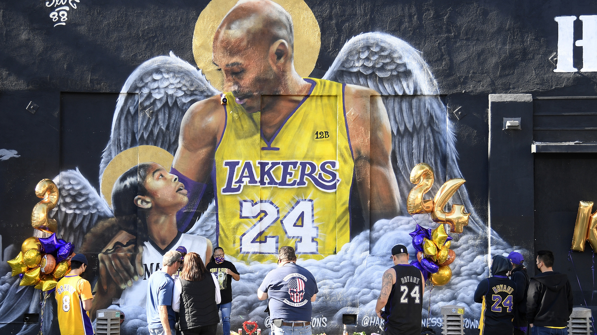

History

유년기 시절
코비 브라이언트는 1978년 8월 23일 필라델피아에서 태어났다.
그의 아버지는 무명의 NBA 선수 조 브라이언트였고,
어렸을 때부터 활발했던 코비는 일찌감치 농구에 관심을 보였다.
그는 농구 선수와 축구선수를 꿈꾸기 시작했는데,
코비의 아버지가 1984년 휴스턴을 마지막으로 NBA를 떠나 이탈리아에서 선수생활을 하게 되면서
코비도 그곳에서 유년시절을 보내면서 AC밀란의 팬이 되었다.
하지만 농구의 대한 마음도 커져갔다. 코비의 할아버지가 코비 가족이 유럽에서 생활하는 동안
NBA 경기를 녹화해 이탈리아로 보여주었는데,
대부분 경기가 80년대를 풍미했던 쇼타임 레이커스 경기라서
매직 존슨과 같은 슈퍼스타들의 엄청난 플레이에 깊은 인상을 받은
코비는 이때부터 LA 레이커스의 선수가 되겠다는 목표를 가지게 된다.
고등학교 시절
코비의 아버지가 1991년에 선수 생활을 끝마쳤을 무렵 코비는 13살 때 다시 미국으로 돌아오게 되었고 본격적으로 농구선수가 되기위한 과정을 밟아갔다.
로워 메리언 고등학교에 들어가서 2학년 때부터 포인트 가드부터 센터까지 모든 포지션을 소화하면서 팀의 중심 선수로 활약했고,
코비가 재학 중인 3년간 로워 메리언 고교가 기록한 전적은 77승 13패이다. 그는 평균 31.1점, 10.4리바운드, 5.2어시스트, 4.0스틸, 3.8블록 등을 기록하며 훌륭한 성적으로 두각을 드러냈다.
그리고 자연스럽게 미국의 여러 명문 대학에서 관심을 받기 시작했다. 하지만 애초에 대학 진학보다 프로 진출이 목표였던 코비는 1996년 NBA 드래프트에 참가하는 것을 선택했다.
1라운드 13픽으로 샬럿 호네츠에 지명되었으나 전부터 코비에게 관심을 가지고 있었던 LA 레이커스가 당시 레이커스의 센터인 블라디 디박을 내주고 트레이드를 진행했고,
코비는 LA 레이커스에서 선수 생활을 시작했다.

루키 시절
코비는 루키 시즌은 대부분 벤치에서 보냈다. 데뷔전 기록은 6분 출전에 무득점 1리바운드 1블락. 데뷔 첫 득점은 세 번째 경기인 뉴욕 닉스와의 원정경기에서 3분을 출장해 자유투로 1득점을 기록한 것이다.
이후 벤치에서 평균 15분을 출전했고 평균 7.6득점을 기록했다. 그래도 시간이 지날수록 코비는 자신의 진가를 발휘하면서 후반기부터 조금씩 출전시간을 늘려가기 시작했다.
올스타 주간에는 훌륭한 공중동작에 이은 덩크로 1997년 슬램덩크 콘테스트 챔피언을 수상했다.

Kobe Bryant wins 1997 NBA Slam Dunk Contest as a rookie | NBA Highlights (YOUTUBE Link)
당시 팀 동료였던 샤킬 오닐은 "코비처럼 성장이 빠른 선수는 처음 봤다"고 말하면서 그를 칭찬했다.
구단에게 좋은 인상을 준 코비는 두번째 시즌에도 벤치에서 출전하긴 했지만 벤치에이스 역할을 맡았고, 평균 26분을 뛰면서 평균 15.4득점을 기록해 팀 내 비중이 급격히 늘어가게 되었다.
식스맨으로 우수하게 활약하면서 인기를 끌어올리고 있던 코비는 19살이라는 최연소나이에 서부 올스타 주전으로 뽑히는 기염을 토했다.

1997 서부 올스타 멤버
다음 시즌인 98-99시즌부터는 전 경기 주전으로 기용되면서 평균 19.9득점 5.3리바운드라는 서서히 상승되는 기록을 통해 자신의 가치를 증명했고
레이커스는 코비가 조던과 매직 존슨에 견주는 슈퍼스타가 될 것이라 믿고 6년 계약을 체결한다.
그리고 1999 플레이오프 세미파이널에서 유타 재즈에게 패배해 탈락한 이후로 레이커스는 시카고 불스에서 마이클 조던과 함께 6번의 우승을 이끌어낸 명장 필 잭슨을 감독으로 기용하게 된다.
레이커스는 우승을 향한 예열을 마치며 코비는 4년차 시즌을 맞이한다.
샤킬오닐과의 콤비 시절
명장 필 잭슨의 지도를 받게 된 코비는 평균 22.5득점 6.3리바운드 4,9어시스트를 기록하는 등 점점 성장세를 쭉 이어갔고
오닐과 함께 팀득점을 책임지면서 공격의 모든 부분을 이끌었다. 또한 수비적인 부분도 발전하였는데, 매번 상대 스코어러의 수비를 전담하면서 뛰어난 수비력을 과시하였고
그 결과 커리어 첫 ALL-NBA 디펜시브 퍼스트 팀에 선정되었다.
코비와 오닐 듀오의 맹활약으로 레이커스는 정규 시즌 67승 15패 리그 전체 승률 1위로 플레이오프에 진출하였다.
플레이오프에서 레이커스는 새크라멘토, 피닉스를 차례로 꺾고 서부 컨퍼런스 파이널에서 포틀랜드를 상대하였는데 코비는 이 시리즈에서 수많은 명장면을 만들어냈다.
코비와 오닐이 합작한 시리즈 최고의 명장면
이후 포틀랜드를 제압하며 파이널에 진출하였고,
파이널 상대로 인디애나 페이서스를 만났는데 클러치에서 꾸준히 득점을 책임지며 팀에 승리를 가져오던 코비가 파이널 2차전에서 발목 부상을 당해 아웃되었고
3차전을 결장하면서 1경기를 내주었다. 그 후 4차전에 돌아와 후반에 22득점을 몰아치며 해결사 역할을 분명히 해주었고 오닐이 파울 아웃으로 빠진 공백을 메우면서 팀 승리를 이끌었다.
6차전에서는 극적인 결승 득점을 성공시키면서 4승2패로 데뷔 이후 4년 만에 NBA 파이널 우승을 차지하였다.
코비의 결승전 클러치 득점장면
다음 00-01 시즌에도 레이커스는 코비와 오닐 듀오를 앞세워 리그를 지배했지만 코비와 오닐의 갈등이 표면 위로 드러나며 불화의 조짐이 보이기 시작했다.
이때부터 코비는 서서히 자신이 팀의 1옵션이 되길 원했고 이를 반가워하지 않던 오닐과 갈등이 일어나기 시작했다. 이 정규 시즌 56승 26패를 기록했고 '우승에는 실패하지 않을까?'라는 여론이 커지게 되었다.
하지만 막상 플레이오프에서는 언제 갈등이 있었냐는 듯 파이널 우승까지 단 1패만을 하며 건재함을 과시하였다.
1라운드부터 컴퍼런스 파이널까지 포틀랜드, 새크라멘토, 샌안토니오를 모두 무패로 잡아낸 레이커스는 파이널 1차전을 당시 개인상을 휩쓴 앨런 아이버슨이 이끄는 필라델피아에게 내주며 연승행진은 끊겼지만,
이후 4연승을 거두며 2번째 우승을 맞이하였다.
그리고 다음 시즌인 01-02시즌에 58승 24패 다소 부진한 모습으로 정규 시즌을 마감했지만,
플레이오프에 와서는 부진하는 모습이 사라지며 금새 경기력을 끌어 올렸다. 플레이오프 1,2차전 상대를 가볍게 제압하고, 서부 컨퍼런스 파이널에서 새크라멘토와 7차전까지 간 뒤에 파이널의 자리에 다시 올라왔다.
결국 파이널에서 뉴저지 네츠를 상대로 4연승을 거두면서 쓰리핏을 달성하였다.
이때 코비의 나이는 겨우 23살밖에 되지 않았고 이는 리그에서 최연소로 쓰리핏에 성공한 선수였다.
코비와 오닐의 다툼도 코트 밖에서의 일이었고, 코트 안에서는 여전히 위력을 과시했기에 레이커스의 미래는 앞으로도 밝을 전망이었다.
하지만 오닐이 발가락 부상으로 두 차례나 수술을 받으면서 코비의 어깨는 점차 무거워지기 시작했다.
코비는 평균 득점 30점을 달성하면서 득점력을 과시헀지만 오닐이 복귀 후에도 컨디션이 좋지 않아 레이커스는 서부 5위로 정규 시즌을 마감하게 되었고 플레이오프에서는 샌안토니오에게 2라운드에서 패배를 하며
4연속 우승에는 실패하고 시즌을 마무리하게 되었다.
레이커스는 다시 챔피언의 자리를 얻기 위해 명예의 전당급 선수인 칼 말론과 게리 페이튼을 영입해 오면서 다음 시즌을 준비한다.
하지만 시즌 내내 기대에 못 미치는 모습을 보여주었고 샤킬 오닐과 코비의 감정의 골이 깊어졌지만 서부 2위를 차지하고 플레이오프 진출에 성공한다.
플레이오프 상대를 차례로 제압하고 파이널에서 디트로이트 피스톤스와 마주하게 된다.
사람들은 대부분 레이커스가 우세하다고 예상했지만, 결국 파이널에서 1승 4패의 무기력한 모습을 보여주며 시즌을 마감하였다.
시즌 종료 후 샤킬 오닐과 게리 페이튼 등 주요 팀원들이 떠났고 필 잭슨 감독마저 지휘봉을 내려놓으면서
코비는 자연스럽게 그토록 원하던 팀의 1옵션으로 시즌을 시작하게 되었다.

홀로서기 시즌
홀로서기에 시작한 코비의 개인 기량은 변함 없었지만 팀의 전체적인 위력이 많이 약해졌기 때문에 5할도 안되는 승률을 거두고 플레이오프 진출에 실패하여 많은 비난을 받았다.
04-05시즌 10년 만에 플레이오프 진출에 실패한 레이커스는 바로 다음 시즌에 다시 필 잭슨 감독을 불러왔고 코비를 중심으로 팀 구성을 점차 맞춰가기 시작한다.
평소 팀원들간의 소통이 소극적이었던 코비는 05-06시즌부터 먼저 다가가는 적극적인 태도를 보여주었고 본인의 문제점을 파악하며 조금씩 고치기 시작했다.
이후 시즌 평균 35.4득점을 기록하면서 득점왕 타이틀을 얻었고 특히 시즌 중반에 토론토전에서 무려 81득점을 뽑아내는 경이로운 모습을 보여주었다.
이날 코비는 야투율 60%, 3점슛 성공률 53%, 자유투 성공률 90%로 엄청난 슛감을 선보였다.
이런 코비의 활약에 힘입어 레이커스는 다시 플레이오프 무대에 복귀하게 된다.
하지만 플레이오프 1라운드에서 탈락하는 충격적인 모습을 보여주었고 이에 코비는 초심의 마음으로 다잡기 위해 새로운 시작을 의미해 등 번호를 8번에서 24번으로 교체하였다.
등번호를 바꾸고 맞이한 다음 시즌 코비는 평균 31.6득점을 기록하면서 2년 연속 득점왕 자리에 올랐고, 팀 또한 서부 7위로 간신히 플레이오프 진출에는 성공하였다.
문제는 레이커스에 코비를 도와줄 특출난 선수가 없었다는 것이었는데, 플레이오프에서는 작년과 마찬가지로 1라운드 탈락을 하면서 아쉬움을 남겼다.
3년간 1번의 플레이오프 탈락, 2번의 1라운드 탈락이라는 좋지 않은 결과에 코비도 팀 구성에 문제점을 느끼고 구단에 전력보강을 요청하였다.
시즌 중반에 멤피스에서 활약 중인 파우 가솔을 영입해오면서 코비의 부담감을 줄일 수 있었고, 팀도 정규 시즌 57승 25패로 서부 1위를 차지하였다.
코비는 이 시즌에 좋은 팀 성적과 개인 기록을 같이 겸비한 결과 정규 리그 MVP를 수상하게 되었다.
또 레이커스는 코비의 폭발력있는 득점과 함께 플레이오프에서 상대를 제압해 나갔고 오닐없이 처음 파이널 진출에 성공한다.
파이널 상대는 케빈가넷, 폴 피어스, 레이알렌 빅3가 이끄는 보스턴 셀틱스였고 그들의 조직적이고 끈질긴 수비에 묶이게 되면서 2승 4패로 우승에 아쉽게 실패하게 되었다.
그래도 레이커스는 좋은 활약을 보여주었던 선수단의 변화 없이 다음 시즌을 맞이하였는데, 코비와 가솔 듀오를 앞세우며 좋은 시즌을 보내고 또 다시 서부 1위를 차지하였다.
지난 시즌 파이널 패배로 우승에 대한 동기부여가 불을 뿜은 상태에서 레이커스는 플레이오프 상대를 차례대로 꺾으면서 2년 연속 파이널 무대를 밟게 되었다.
마주한 파이널 상대는 당시 최고 센터 드와이트 하워드가 이끄는 올랜도 매직이었는데, 코비는 본인의 뜨거운 손끝 감각을 보여주면서 평균 32.4득점 5.6리바운드 7.4어시스트의 좋은 기록으로
올랜도를 제압하며 다시 챔피언 자리에 오를 수 있었다. 플레이오프 내내 뛰어난 모습을 보여준 코비는 파이널 MVP까지 수상했고 4번째 우승을 샤킬 오닐 없이 팀의 리더가 된 상태로 첫 우승을 만끽하였다.

Kobe Bryant 4th Championship, Full Series Highlights vs Magic (2009 NBA Finals)
이어지는 09-10시즌에는 코비가 크고 작은 부상에 시달리게 되는데, 휴식이 필요한 부상에도 뛸 수 있을 때까지 출전을 감행했고 시즌 중 여러 차례 클러치 샷을 성공시키면서 좋은 모습을 보여주었다.
레이커스는 우승후보 1순위로 평가 받으면서 정규 시즌을 달렸고 서부1위를 놓치지 않았다.
이번 파이널에서는 2008년에 패배의 쓴맛을 보았던 보스턴 셀틱스를 마주하게 되었다.
코비는 보스턴의 집중 견제를 받았지만 강심장의 면모를 보여주면서 팀을 승리로 이끌었다.
결국 2년 연속 우승이자 커리어 5번째 우승을 달성하면서 파이널 MVP를 수상하는 커리어 중 최고라고 평가할 수 있는 시즌을 보낼 수 있었다.
Kobe Bryant 5th Championship, Full Series Highlights vs Celtics (2010 NBA Finals)
2년간 좋은 모습을 보여준 레이커스는 코비와 가솔의 계약을 연장하면서 전력을 유지했고, 다음 시즌에도 여전히 건재한 모습을 보여주었기에 팬들은 우승을 기대했는데
예상 밖의 복병인 덕 노비츠키의 댈러스 매버릭스에게 처참한 패배를 당했다.
코비에게는 자신의 우상인 마이클 조던의 6번 우승에 다가가질 못한 것과 잭슨 감독의 시리즈 참패의 굴욕으로 감독직을 내려놓으면서 레이커스는 아쉬움을 감추지 못하였다.
포기하지 않은 코비의 우승 도전은 다음 시즌에도 계속 되었지만 2라운드에서 케빈 듀란트와 러셀 웨스트브룩이 이끄는 오클라호마시티 썬더에게 탈락하였다.
레이커스는 계속해서 우승을 위해 12-13시즌 스티브 내쉬와 드와이트 하워드를 영입하는 등 전력보강을 통해 막강한 우승 후보로 급부상의 모습을 보여주려 했으나
막상 정규 시즌에 보여준 모습은 기대 이하였고 하워드는 코비 위주의 공격에 불만을 드러내면서 팀 내에서 불화가 일어나기 시작했다.
엎친데 덮친 격으로 시즌 말에 코비가 왼쪽 아킬레스건 파열 부상을 입으면서 시즌 아웃되어 일찍 마감하게 되었다.
34살이라는 나이에 치명적인 부상을 입은 코비는 즉시 수술을 결정하였고 다행히도 수술은 성공적으로 끝났고 빠르게 코트로 복귀하고 싶은 마음에 회복 후 재활에 전념해서 7개월만에 훈련을 시작했다.
13-14시즌 중반에 힘겹게 코트에 복귀했지만 그 후 얼마 지나지 않아 다시 무릎 부상을 당하면서 시즌 아웃 판정을 받았다.
후반기 시절 그리고 은퇴
무릎 부상을 당한 후 한동안 재활에 매진한 코비는 다음 시즌에 복귀해서 35경기동안 평균 22.3득점 5.7리바운드 5.6어시스트를 기록했다.
기록상으로는 좋은 활약을 펼친 것처럼 보이나 커리어 최악의 야투 성공률과 많은 야투시도를 하면서 적지 않은 비난을 받았다.
코비는 15-16 시즌이 공개적으로 자신의 마지막 시즌이 될 것이라고 선언했고 마지막까지 그는 계속해서 슛을 던졌다.
이후 그는 자신의 우상인 마이클 조던을 제치고 역대 최다 득점 부문 3위에 올랐다. 팬들은 코비의 경기를 볼 날이 서서히 줄어들었고
2016년 4얼 14일 유타 재즈와 마지막 경기를 치르게 된다.
그의 커리어 마지막 경기
팬들은 그의 은퇴를 축하하기 위해 하나 둘 코트를 방문했고 코비는 관중들의 환호성을 받으며 신발 끈을 메고 휘슬 소리와 함께 경기가 시작되었다.
마지막 경기조차 코비는 코비다웠다. 그는 50개의 야투를 시도하여 위닝샷 포함 22개의 야투를 성공하며 60득점으로 자신의 커리어 마지막 경기를 자축했다.
그리고 커리어 마지막 지표는 패스를 통한 어시스트였다. 그는 팬들에게 그의 시대를 새로운 젊은 시대에게 자리를 넘겨주는 감동을 선사하며 은퇴하였다.
그는 수많은 사람들의 기립박수 속에 자신의 역사를 마침표 찍었다.
그리고 코비는 스테이플스 센터 한가운데에서 스포트라이트 조명과 함께 마이크를 집었다.

Kobe Bryant 60 Points in Final Game vs Utah Jazz
"휴, 20년이란 시간이 이렇게 빠르게 지나갔다는걸 믿을 수가 없습니다. 이건 정말 미친 것 같아요."
"여러분이 함께 있고, 제 뒤에는 동료들이 있고, 저는 이 코트 한가운데 서 있습니다. 우리가 함께 해온 여장에 정말 진심으로 감사합니다. 좋을 때도, 나쁠 때도 있었지만 가장 중요한 건 우리가 함께 겪으며 견뎌왔다는 것이라고 저는 생각합니다."
"저는 어렸을 때부터 레이커스의 팬으로 자라왔습니다. 이곳에 있었던 모든 순간과 장면들을 저는 다 기억합니다. 1996년 드래프트 된 후, 레이커스로 트레이드 되어 20년간 뛰었는데 이보다 더 좋은 것은 없다고 생각합니다."
"제가 가장 자랑스러운 점은 우승이 아니라 힘들었던 시절입니다. 왜냐하면 우리는 도망치지 않고 싸워 이겨냈고, 우승을 이뤄냈습니다. "
"제가 여기서 할 수 있는 일이라곤, 여러분에게 감사하다는 말밖에는 할 수가 없습니다. 저를 도와주었던 시간에 감사하고, 경기에 뛸 수 있도록 동기부여를 주고 영감을 주신거에 감사합니다. "
"정말 멋졌어요. 이렇게 마지막이라는 것이 믿어지지 않네요. 여러분에 대한 저의 감정을 말로 표현 할 수 없습니다. 항상 제 가슴 속에 있고, 진심으로 정말 감사하고 사랑합니다."
"What can i say? Mamba Out!"
코비는 코비답게 그의 여정을 마무리했다.

RIP KOBE
누구도 예상치 못했던 이별, 우리에게 다가온 믿을 수 없는 이야기
현역에서 유종의 미를 거두며 은퇴한 후, 불과 41세의 나이로 가족과 함께 제 2의 인생을 살아가던 도중 우리에게 갑작스러운 소식이 전해졌다.
2020년 01월 26일 코비는 그의 둘째 딸 지아나과 함께 농구 아카데미에 참석하기 위해 헬기를 탑승하여 이동하던 도중, 기상 악화로 인한 헬기 추락 사고로 사망했다.
그 헬기 안에는 코비와 지아나를 포함한 9명의 인원이 탑승하였는데 추락과 동시에 큰 화재가 발생하였고, 생존자는 없었다.
그의 갑작스러운 사망 소식에 전 세계는 너무나 큰 충격을 받았다.
그의 마지막 트윗은 사고 전날 그가 아끼는 후배인 르브론 제임스가 경기에서 자신의 NBA 통산 득점 기록을 넘어서는 순간 남긴 르브론에 대한 축하 멘트 하나였다.
이어지는 경기에서 선수들은 경기 시작 후, 그의 등번호 8번과 24번을 통해 8초, 24초간 경기를 하지 않고 묵념하는 시간을 가지며 그를 추모했다.
며칠동안 전 세계 농구 팬들은 슬픔에 잠겼고, 여러 구단 및 선수들도 많은 시간을 가지고서야 입을 열었다.
다음은 각각 르브론 제임스, 마이클 조던, 샤킬 오닐, 그의 아내 바네사 브라이언트의 공개적인 자리에서 열린 그의 추모 연설이다.